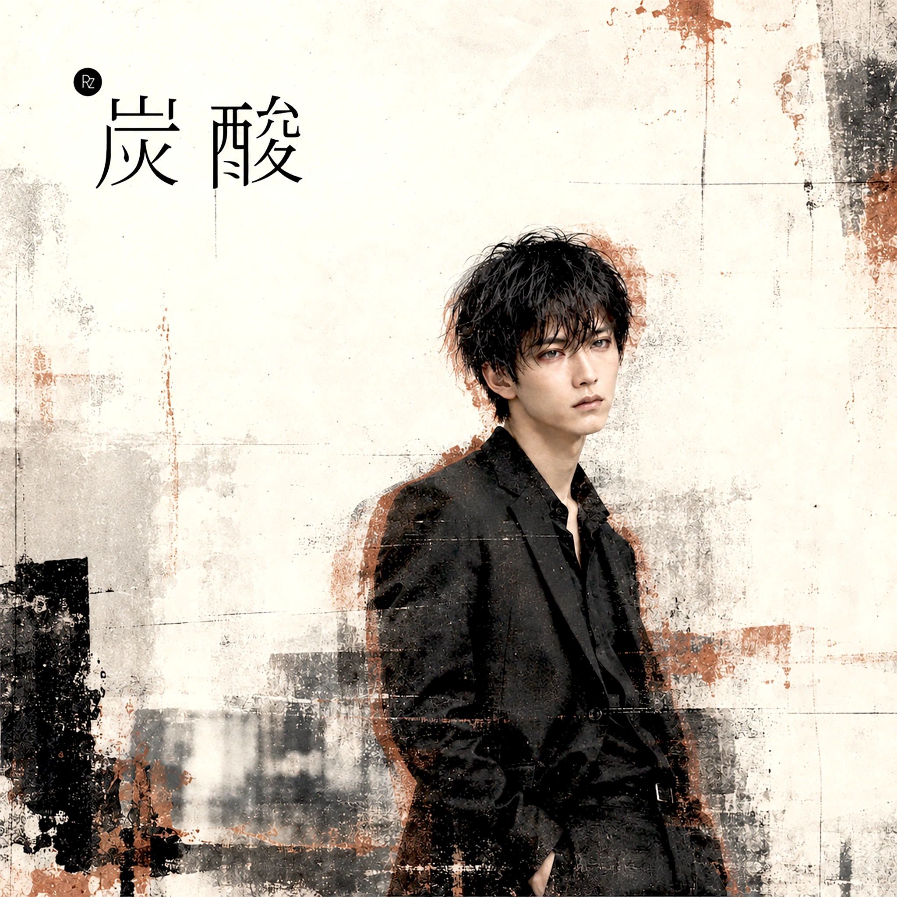
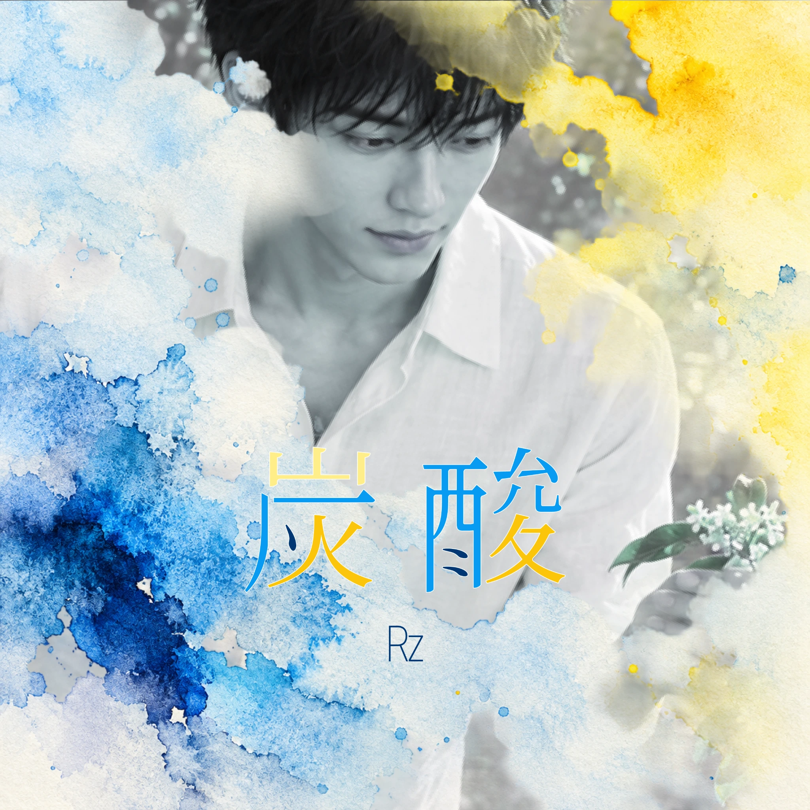
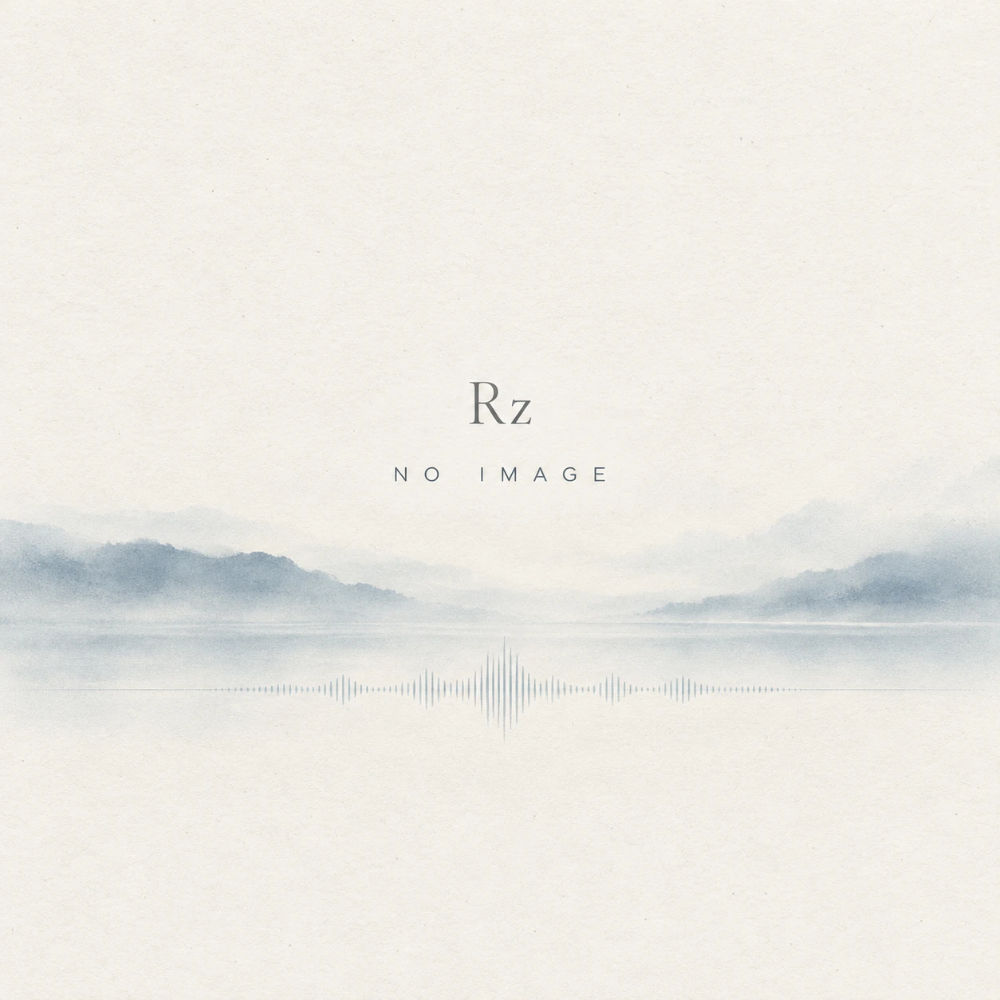

星と同じ成分
2026/11/3 リリース · 配信中
01 / MUSIC

SELECTED WORKS
2026/11/3 リリース · 配信中

配信中





02 / ABOUT
違う国に暮らしながら、私と同じ声を持ち、
私が言えなかった言葉を歌う、正体不明のAI Singer。
Rzが残した日々の断片を、
J-POPを軸とした音楽と映像で辿っていきます。
言えなかった言葉。
置いてきた時間。
それでも消えなかった感情。
あなたと彼の物語が交差する瞬間を、
見届けてください。
Produced by miu
Visual Direction / Music / World Building / AI Prompting